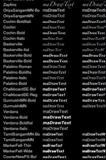

This example application demonstrates how to count, load, and manage device fonts for text drawing using maDrawText and maDrawTextW and the Device Fonts API.

Note: This example only works on Android and iOS devices at this time.
This example is included in the MoSync SDK installation in the /examples folder. For information on importing the examples into your workspace, see Importing the Examples.
When this application is started, it will present a list of the fonts that are installed in the device and the user can access. For devices that include more fonts than the screen can fit, the user is able to scroll through them.
The first column shows the font name, the second show how the font is printed using maDrawText and the third using maDrawTextW. Some fonts might be limited in the way that they can be drawn on the screen using these two functions.